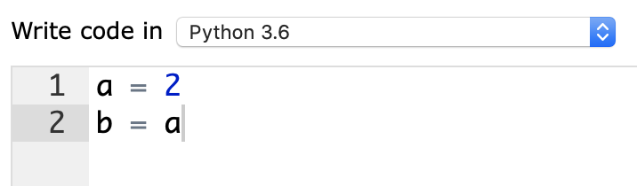
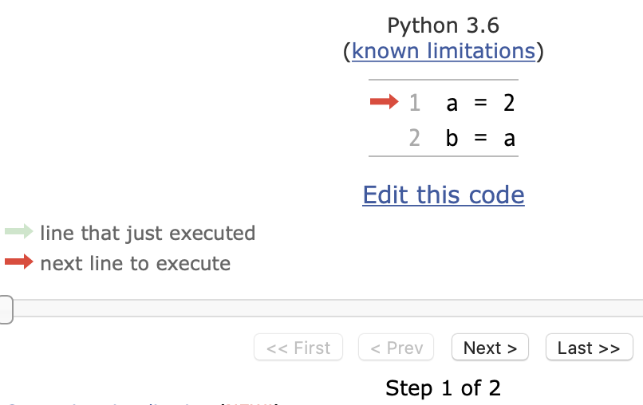
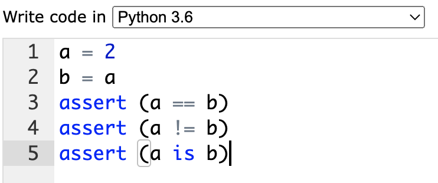
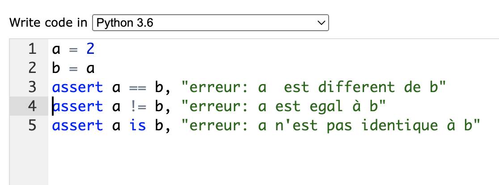
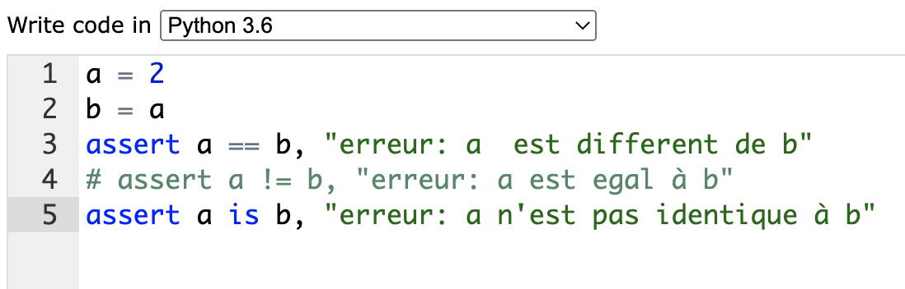

TP variables
Travaux pratiques
Les types mutables et non mutables en python
Vous traiterez chacun des exemples suivants en utilisant l’editeur de pythontutor
Saisir les 2 lignes de code suivantes :

Cliquer sur Visualize execution.

Dérouler alors le script ligne par ligne avec next.
créer des tests sur l’identité des variables
Revenir à la page d’edition et ajouter à la suite du script les 3 tests suivants :

Executer le programme
Chaque test ajouté est une assertion, qui arrête le programme lorsque l’un des tests retourne False. Sinon, le programme poursuit normalement, sans rien signaler.
L’interêt est plus grand si on ajoute un commentaire explicite. C’est le message qui serait normalement affiché dans le Traceback de la console. (trace d’erreur).
False, mais que l’on veut poursuivre les autres tests, il faudra mettre la ligne du test en commentaire:

Question a: Quelles expressions donnent True.
Revenir dans la fenêtre d’edition et ajouter maintenant la ligne :
b = b + 1après la ligneb = a
Question b: Refaire les tests et préciser quelles sont les expressions qui donnent True.
types mutables
Remplacer le script précédent par celui-ci :
Puis réaliser les mêmes opérations : Visualiser pas à pas, tester l’identité des variables avec les assertions.
Question c: Que valent a et b après l’execution du programme?
Question d: La copie b = a, est-elle une copie par valeur (2 objets différents) ou par reference (2 objet identiques)?
Fonctions et objets mutables/non mutables
Les objets mutables passés en argument d’une fonction sont copiés par référence. Les autres sont copiés par valeur.
Objets non mutables : copie par valeur
Tester ce script avec l’editeur de Pythontutor.
Question e: x et z, sont-ils 2 objets identiques?
Objets mutables : copie par référence
Cette fois, c’est une liste (objet mutable) qui est passée en argument :
tester le script avec pythontutor
Question f: L1 et L2, sont-ils 2 objets identiques? La copie est-elle réalisée par valeur ou bien par référence?
Conclusion : objets mutables et non mutables
Objets non mutables en python
Les variables simples sont non mutables. On peut réaliser des affectations, ce qui a pour effet de mettre à jour la valeur stockée dans la mémoire réservée.
Objets mutables en python
La copie d’un objet mutable se fait par référence. Cela peut entrainer des erreurs lors de la manipulation de ces objets, puisque la modification de l’un va aussi modifier toutes les variables mutables possédant la même référence.
De même, un objet mutable passé en argument d’une fonction est modifié par ce que l’on appelle : un effet de bord dans la fonction.
Imaginons un script qui prend les coordonnées de depart d’un point, coordonnees_init, et realise une translation (ajoute 1 à x et 2 à y).
Tester le script de la fonction1
Question g: Les nouvelles coordonnées sont stockées dans la Liste deplacement. Comment évoluent les coordonnées dans les 2 listes? La liste de coordonnées d’origine est-elle modifiée par le script?
Tester maintenant le script de la fonction2
Question h: Comment évoluent les coordonnées dans chacune des listes? deplacement et coordonnees_init pointent-ils vers la même reference?
Pour faire une copie de la liste a par valeur, il faudra la découper sans mentionner les 2 indices avec b = a[:], ou bien utiliser la fonction list , avec b = list(a), ou bien utiliser la méthode copy():
Question i: Cette fois, deplacement est-il une copie par valeur ou par reference de coordonnees_init? Précisez ce qu’est une copie par valeur.
Dictionnaires
Un dictionnaire est un tableau associatif qui stocke des couples: clé: valeur. Un dictionnaire est entouré d’accolades {}.
Dans l’exemple précédent, le dictionnaire personne contient trois couples clé: valeur, à savoir :
| clé | valeur | |
|---|---|---|
| ‘Nom’ | → | ‘Nastic’ |
| ‘Prénom’ | → | ‘Jim’ |
| ‘Age’ | → | 42 |
à tester:
Puis modifier l’age de Jim:
Question j: Cela a-t-il modifié la valeur de l’age de Dan? Cela a-t-il modifié l’une des valeurs de famille?
Conclure (famille pointe t-il vers la reference de Jim ou bien s’agit-il d’une copie par valeur?).
Classe et objets
Pour les objets, c’est le même principe: toute variable de classe pointe pour toute la durée du programme sur la même réference. La référence va être partagée entre toutes les instances de la classe. C’est donc le même objet !
Question k1: Executer le script. Que valent g1.supplements et g2.supplements? Quel est leur type?
Question k2: Ajouter l’instruction g1.supplements.pop() avant la dernière ligne. Que valent maintenant . g1.supplements et g2.supplements? Conclure.
Portfolio
Pour le script suivant:
Reproduire sommairement le schéma de la structure de données telle qu’elle serait représentée dans Pythontutor, à la fin de ce script.